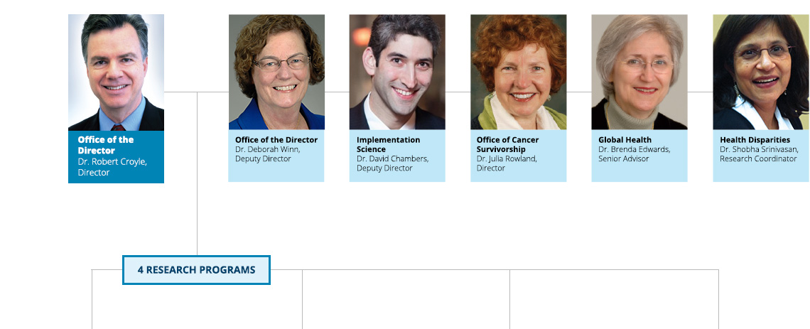
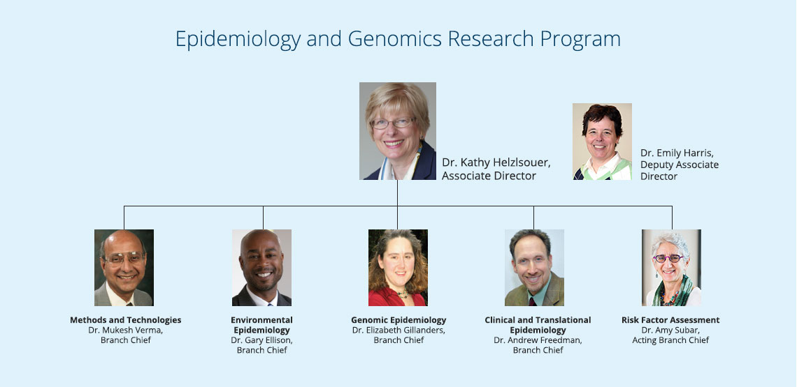
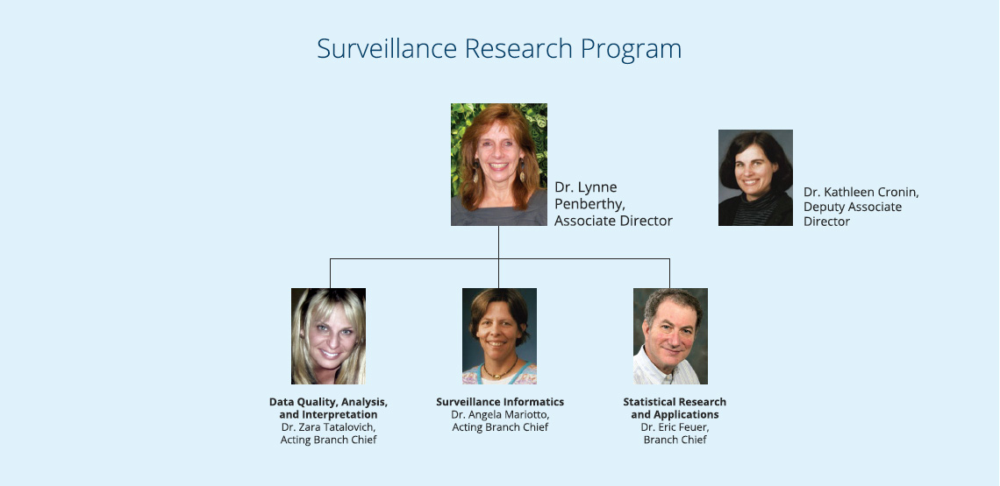
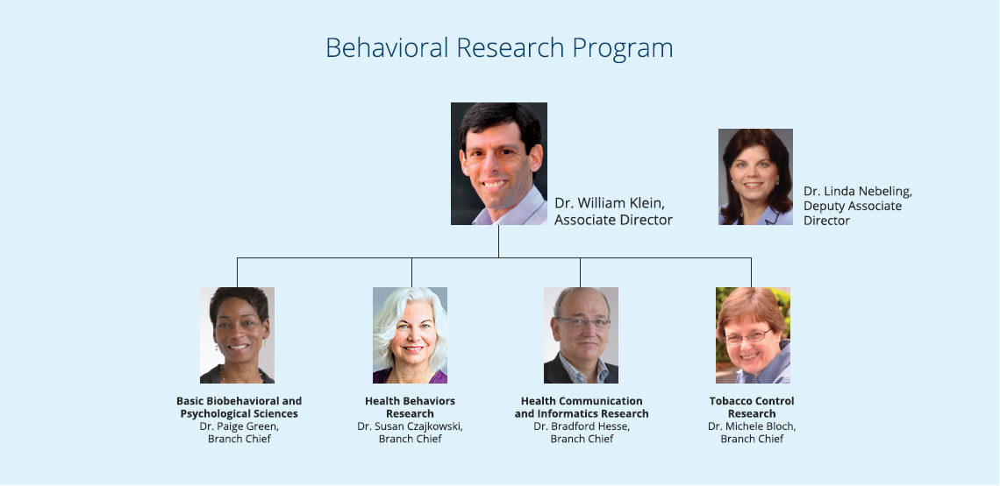
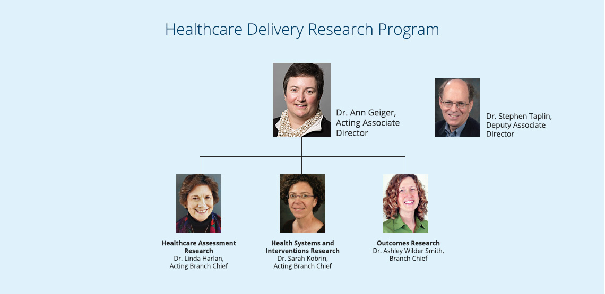

Leadership at a Glance
The DCCPS senior leadership team is often described as dedicated and innovative. We pride ourselves not only in our commitment to cancer control, but also in our willingness to utilize unconventional ideas and approaches to accelerate progress in cancer research.




